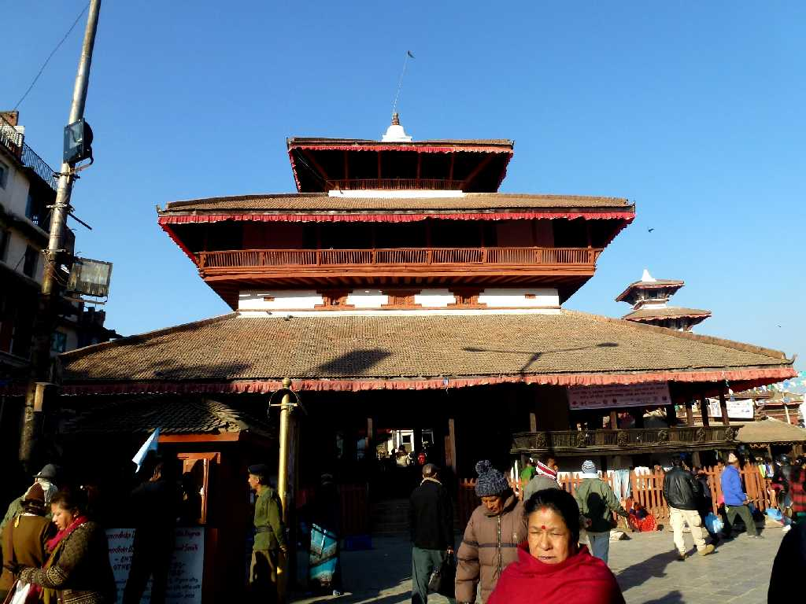
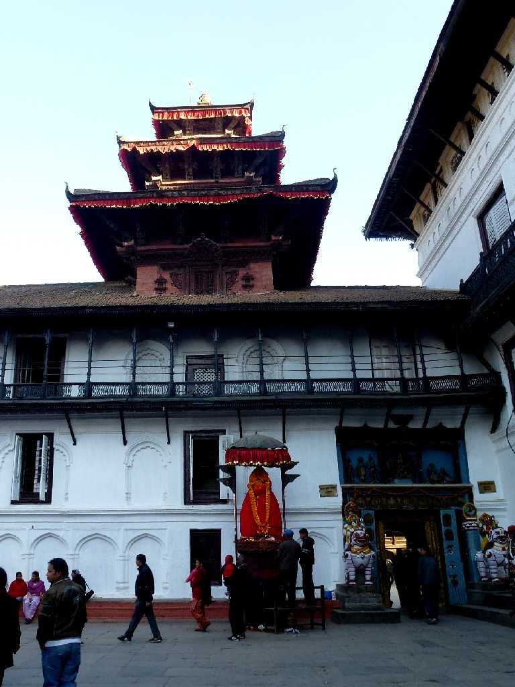
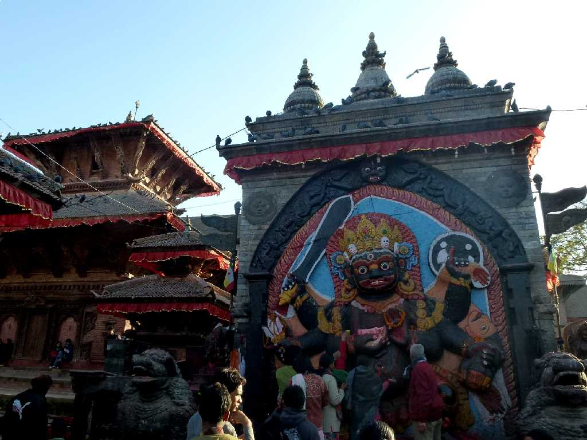
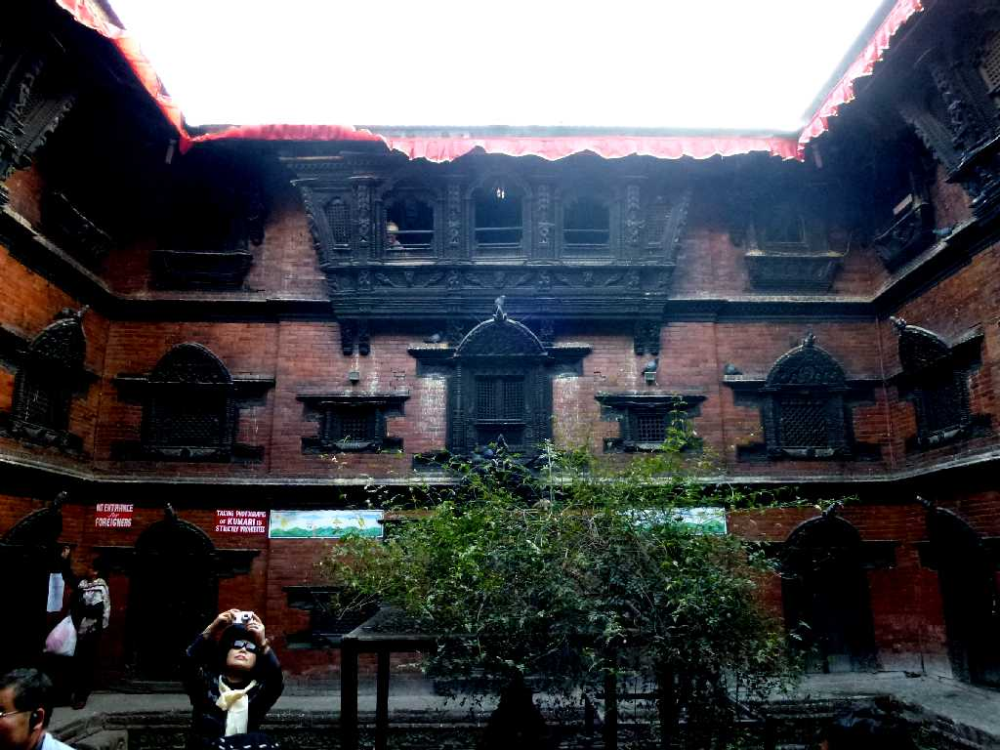
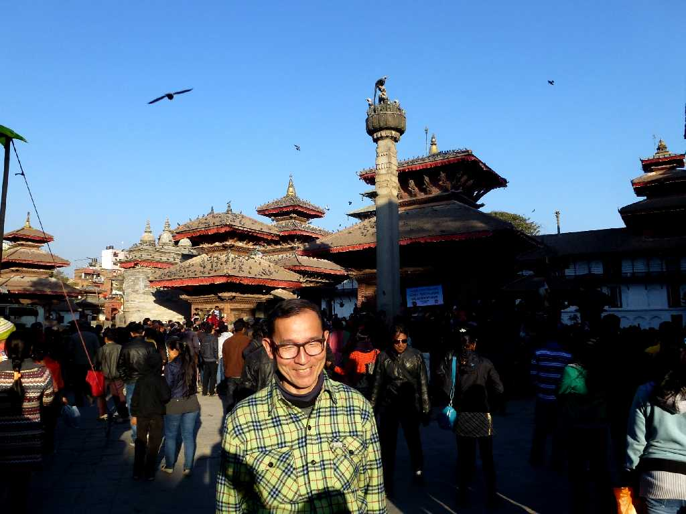
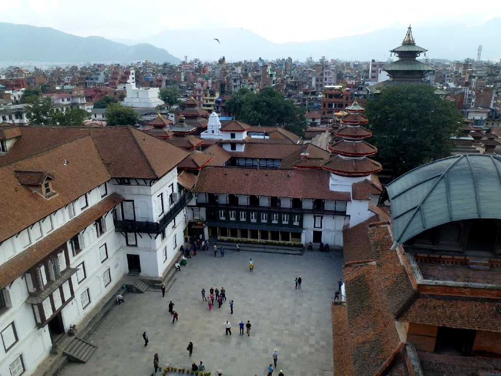
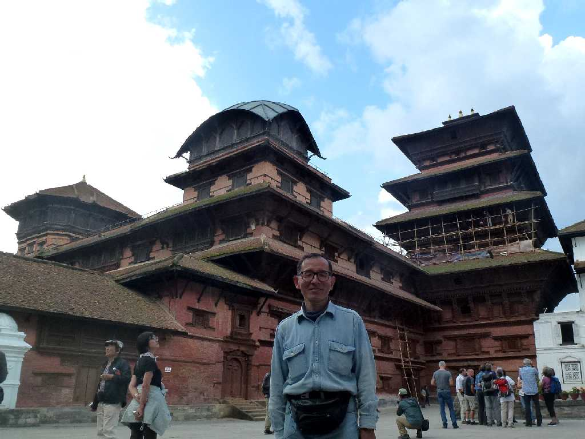

Kashthamandap Temple Kathmandu
一本の木(カスタ)から出来た祭場(マンダプ)で１２世紀に創られたネパール最古の寺院 カトマンズの名前の由来と云われている寺院

Hanuman Statue Hanuman Dhoka
１７世紀に創られたカトマンズ旧王宮で１１代続いたネパール国王の宮廷であった ハヌマーンは叙事詩ラーマヤーナで活躍する猿の神様でドカは門を意味する

Kal Bhairav
カルバイラブはシバ神の化身で破壊の神 この前で嘘をつくと血を吐いて死ぬと云われている

Kumari Bahal
ネパールの生きた女神クマリの館 クマリは幸福をもたらす神として信仰され１６時に現れたが写真撮影禁止でした



December 25 2012 Kathmandu

Lohan Chowk Kathmandu
約２年ぶりの再訪問で五重塔に登ることができた

October 28 2014 Kathmandu
中国の西寧からチベット縦断３,０００ｋｍの旅はここカトマンズで終わる